Piezas de carrocería para Hyundai en Panamá
346 piezas disponibles hoy, cada una con su foto y su código: parrillas (40), faros y lámparas delanteras (31), lámparas traseras (26), defensas traseras (25).
- Garantía de 3 días
- Foto real de cada pieza
- Efectivo, Yappy o ACH
- Lunes a sábado, 8:00 a. m. a 5:00 p. m.
Por modelo
Parrillas para Hyundai 40
 441Grand i102014-17 · original
441Grand i102014-17 · original 442i202016 · original
442i202016 · original 444Creta2016-18 · original
444Creta2016-18 · original 446Accent2012-19 · genérico
446Accent2012-19 · genérico 448Accent2016-22 · original
448Accent2016-22 · original 449Accent2014-19 · original nuevo
449Accent2014-19 · original nuevo 451Tucson2016-18 · original nuevo
451Tucson2016-18 · original nuevo 452Accent2016-20 · genérico nuevo
452Accent2016-20 · genérico nuevo 460Accent2018-20 · original
460Accent2018-20 · original 461Accent2011-14 · genérico
461Accent2011-14 · genérico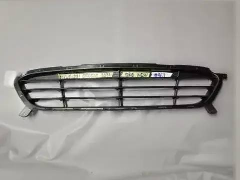
462Accent2011-14 · original nuevo 463Accent2008 · original nuevo
463Accent2008 · original nuevo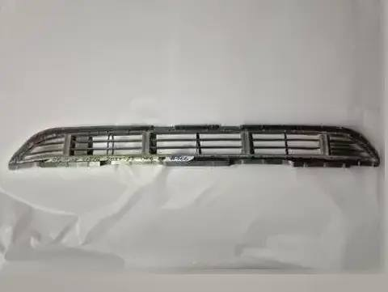
466Creta2021-23 · original 467Accent2018-20 · original
467Accent2018-20 · original 468Grand i102017-19 · original
468Grand i102017-19 · original 469Tucson2016-18 · original
469Tucson2016-18 · original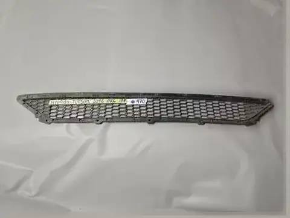
470Tucson2016-18 · original 471Tucson2019-21 · original
471Tucson2019-21 · original 472Grand i102017-19 · original
472Grand i102017-19 · original 473Tucson2022-24 · original
473Tucson2022-24 · original 474H12015 · original
474H12015 · original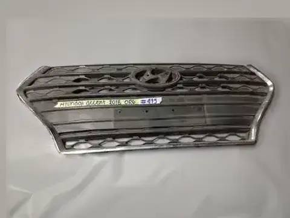
475Accent2018-20 · original 476Tucson2019-21 · original
476Tucson2019-21 · original 477Tucson2016-18 · genérico
477Tucson2016-18 · genérico 478Tucson2021-24 · original nuevo
478Tucson2021-24 · original nuevo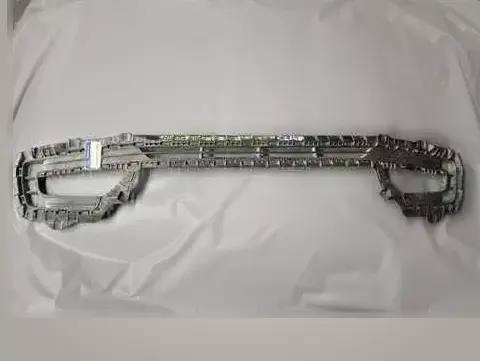
479Grand i102018-21 · original nuevo 480Santa FE2019-20 · original
480Santa FE2019-20 · original 482Accent2018-20 · original
482Accent2018-20 · original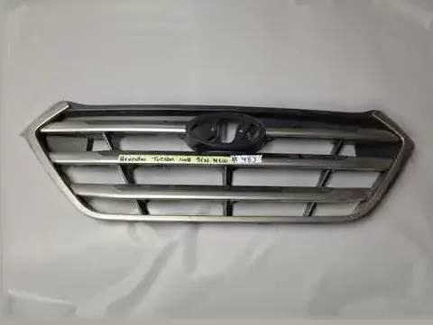
483Tucson2016-18 · genérico nuevo 484Grand i102020-26 · original
484Grand i102020-26 · original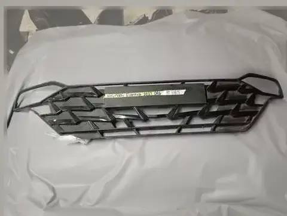
485Elantra2021-23 · original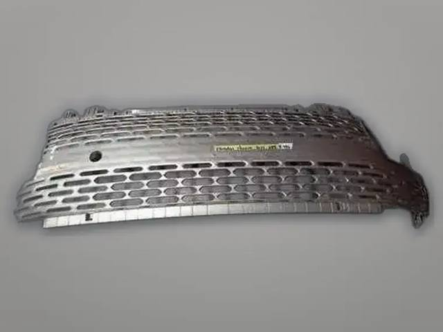
486Staria2024-25 · original 629Accent2022-24
629Accent2022-24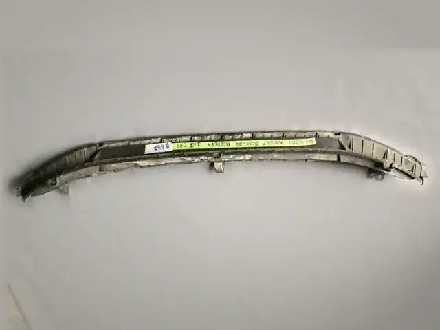
688Accent2023-26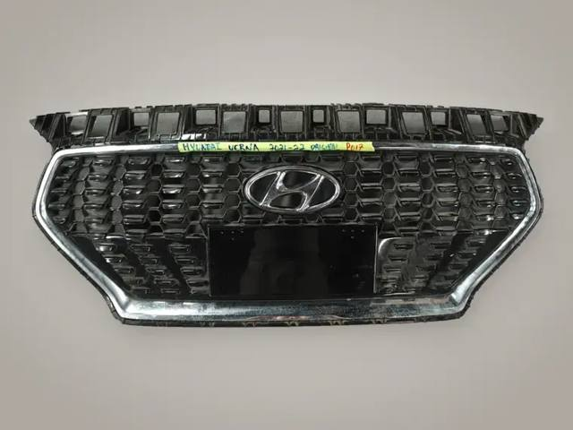
P017Verna2021-22 · original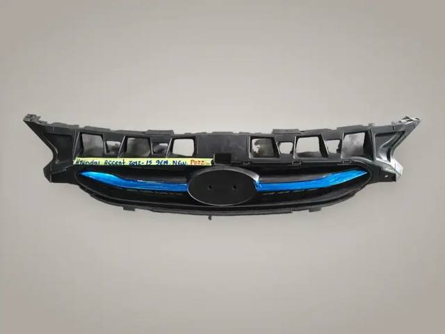
P022Accent2012-15 · genérico nuevo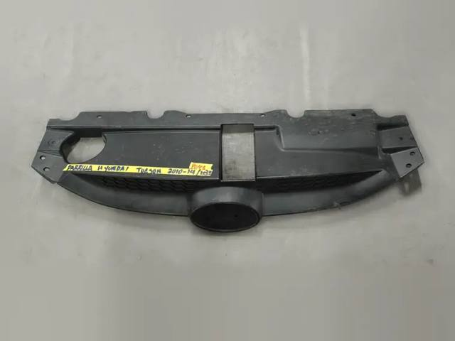
P041Tucson2010-14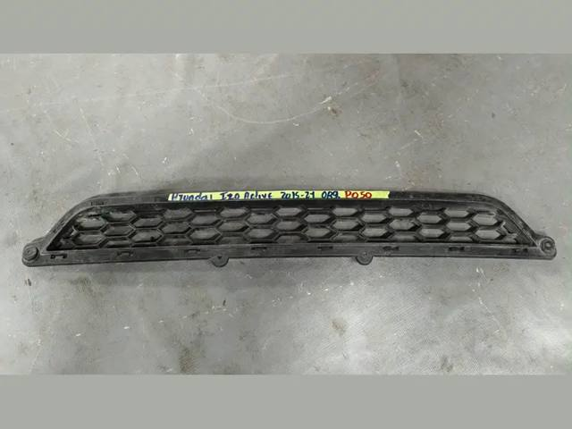
P050i20 Active2015-21 · original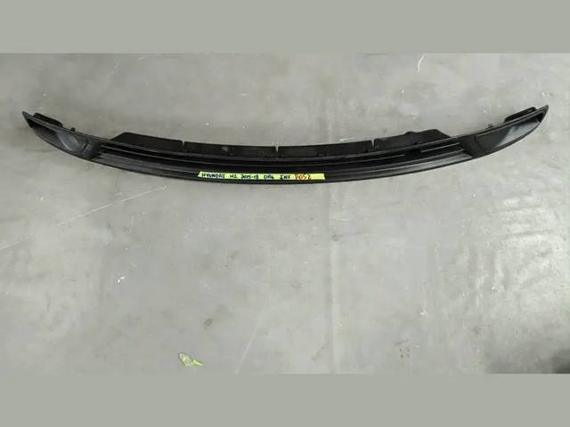
P052H12019-23 · original P055i20 Active2024 · original
P055i20 Active2024 · originalFaros y lámparas delanteras para Hyundai 31
 015Accent2018-20 · lado izquierdo · original
015Accent2018-20 · lado izquierdo · original 017Accent2018-20 · lado izquierdo · original
017Accent2018-20 · lado izquierdo · original 018Venue2020 · lado izquierdo · original
018Venue2020 · lado izquierdo · original 019Venue2020 · lado izquierdo · original
019Venue2020 · lado izquierdo · original 020HD652010 · lado izquierdo · original
020HD652010 · lado izquierdo · original 021Tucson2019-21 · lado derecho · genérico
021Tucson2019-21 · lado derecho · genérico 022County1998-2008 · lado derecho · original
022County1998-2008 · lado derecho · original 023Tucson2019-21 · lado izquierdo · genérico
023Tucson2019-21 · lado izquierdo · genérico 024Tucson ix352010-15 · lado izquierdo · original
024Tucson ix352010-15 · lado izquierdo · original 025Grand i102018-20 · lado derecho · genérico
025Grand i102018-20 · lado derecho · genérico 026Accent2023-26 · lado derecho · original027Kona2021 · lado derecho · original
026Accent2023-26 · lado derecho · original027Kona2021 · lado derecho · original 028Grand i102014-2018 · lado derecho · genérico
028Grand i102014-2018 · lado derecho · genérico 029i102014-18 · lado derecho · genérico
029i102014-18 · lado derecho · genérico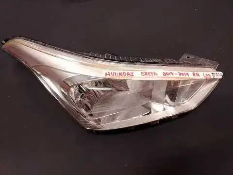
030Creta2016-19 · lado derecho · genérico 031Accent2023-26 · lado derecho · original
031Accent2023-26 · lado derecho · original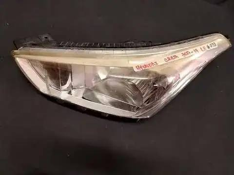
033Creta2016-19 · lado izquierdo · original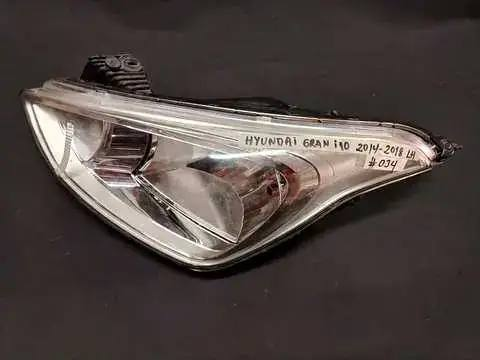
034Grand i102014-2018 · lado izquierdo · original 215Grand i102020-26 · lado derecho · original nuevo
215Grand i102020-26 · lado derecho · original nuevo 217Creta2016-19 · lado derecho · original
217Creta2016-19 · lado derecho · original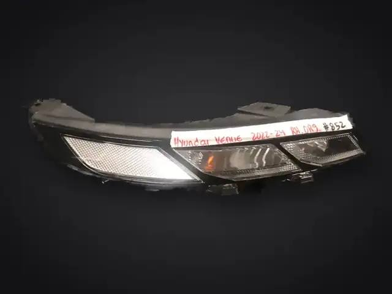
852Venue2022-24 · lado derecho · original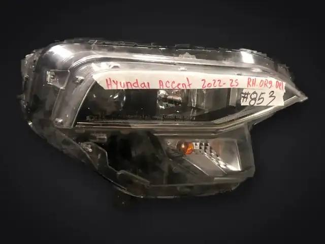
853Accent2023-26 · lado derecho · original LD008ix352017 · lado izquierdo · original
LD008ix352017 · lado izquierdo · original LD009ix352017 · lado derecho · original
LD009ix352017 · lado derecho · original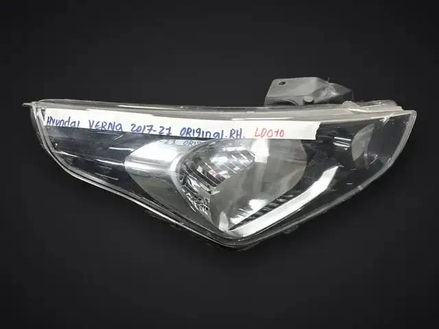
LD010Verna2017-21 · lado derecho · original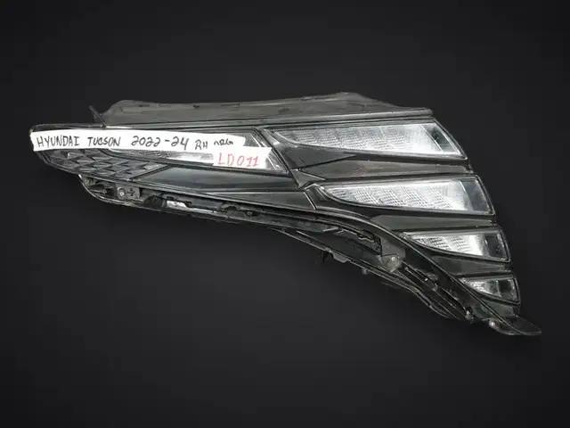
LD011Tucson2022-24 · lado derecho · original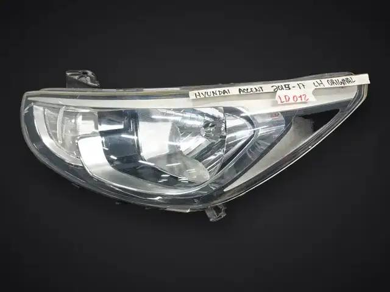
LD012Accent2015-17 · lado izquierdo · original LD013i202015-18 · lado izquierdo · original
LD013i202015-18 · lado izquierdo · original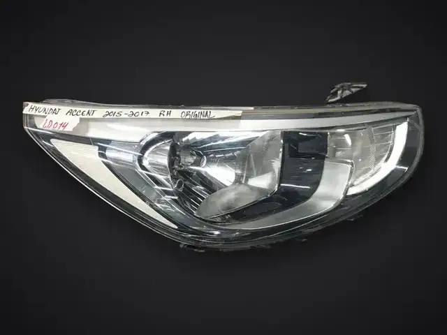
LD014Accent2015-17 · lado derecho · original LD015Creta2016-19 · lado derecho · genérico
LD015Creta2016-19 · lado derecho · genérico LD057Verna2020-23 · lado derecho · original
LD057Verna2020-23 · lado derecho · originalLámparas traseras para Hyundai 26
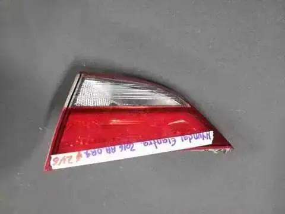
246Elantra2016-18 · lado derecho · original 248Grand i102020-26 · lado derecho · original
248Grand i102020-26 · lado derecho · original 249Creta2018-20 · lado izquierdo · original
249Creta2018-20 · lado izquierdo · original 250Elantra2019-20 · lado derecho · original
250Elantra2019-20 · lado derecho · original 251Palisade2020 · lado izquierdo · original
251Palisade2020 · lado izquierdo · original 253Grand i102014-16 · lado derecho · original
253Grand i102014-16 · lado derecho · original 254Santa FE2019-20 · lado derecho · original
254Santa FE2019-20 · lado derecho · original 255Verna2022 · lado izquierdo · original
255Verna2022 · lado izquierdo · original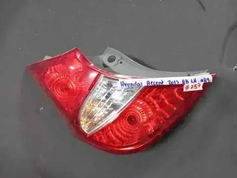
257Accent2015-17 · lado izquierdo · original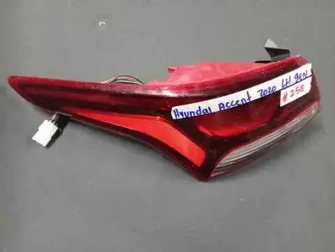
258Accent2018-20 · lado izquierdo · genérico 259Kona2020 · lado derecho · original
259Kona2020 · lado derecho · original 260Accent2023-26 · lado derecho · original
260Accent2023-26 · lado derecho · original 262Accent2023-26 · lado derecho · genérico
262Accent2023-26 · lado derecho · genérico 266Accent2018-20 · lado izquierdo · original
266Accent2018-20 · lado izquierdo · original 267Grand i102020-26 · lado derecho · original
267Grand i102020-26 · lado derecho · original 268Grand i102020-26 · lado izquierdo · original
268Grand i102020-26 · lado izquierdo · original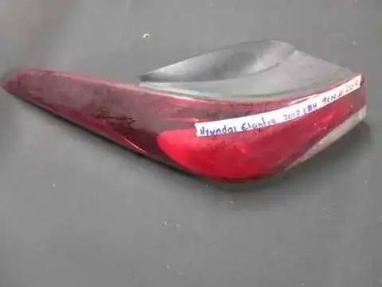
269Elantra2016-18 · lado izquierdo · genérico 273Accent2007 · lado izquierdo · original
273Accent2007 · lado izquierdo · original 274Santa FE2012 · lado izquierdo · original nuevo
274Santa FE2012 · lado izquierdo · original nuevo 275Grand i10 Hatchback2020-26 · lado izquierdo · original
275Grand i10 Hatchback2020-26 · lado izquierdo · original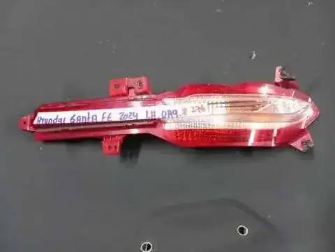
276Santa FE2024 · lado izquierdo · original 278Elantra2014-15 · lado derecho · original
278Elantra2014-15 · lado derecho · original LT002Santa Fe2021-24 · lado izquierdo · original
LT002Santa Fe2021-24 · lado izquierdo · original LT009Accent Sedán2014-17 · lado derecho · genérico
LT009Accent Sedán2014-17 · lado derecho · genérico LT010Accent2012-17 · lado derecho · original
LT010Accent2012-17 · lado derecho · original LT012Grand i102020-26 · lado izquierdo · original
LT012Grand i102020-26 · lado izquierdo · originalDefensas traseras para Hyundai 25
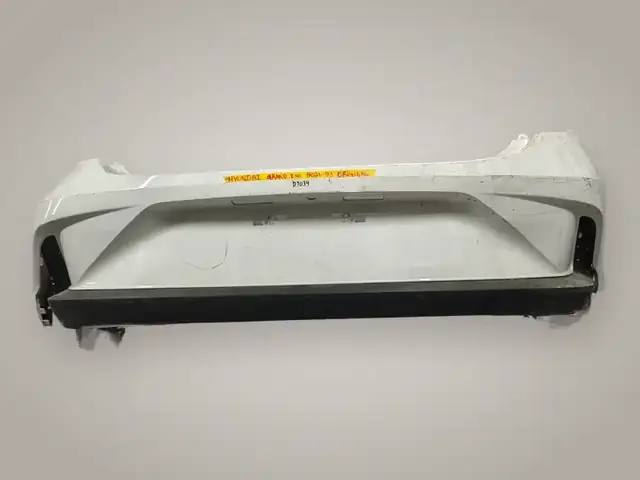
DT034Grand i102020-26 · original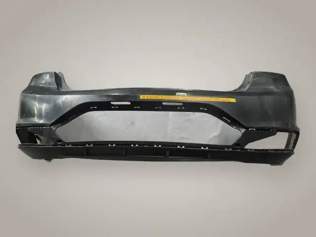
DT035Elantra2018-21 · original nuevo DT036Elantra2014-17 · original
DT036Elantra2014-17 · original DT037Accent2023-26 · original
DT037Accent2023-26 · original DT039Accent2021-23 · original
DT039Accent2021-23 · original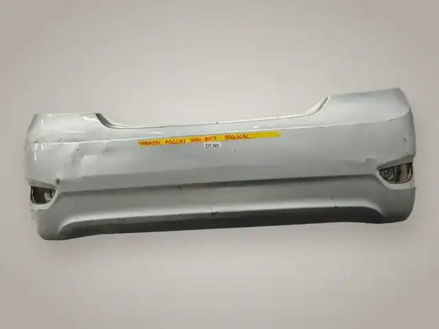
DT040Accent2014-17 · original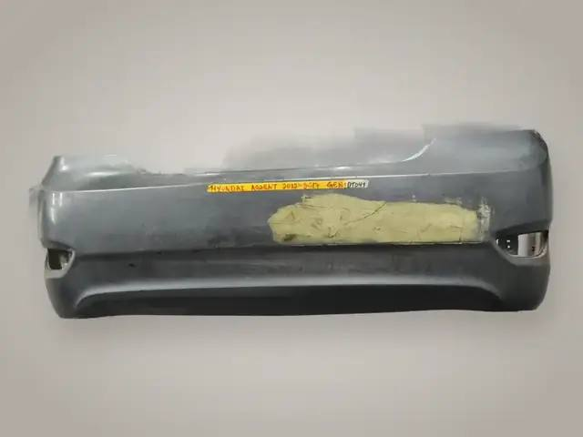
DT041Accent2012-17 · genérico DT042Accent2012-17 · original
DT042Accent2012-17 · original DT043Accent2012-17 · original
DT043Accent2012-17 · original DT044Accent2021-23 · original
DT044Accent2021-23 · original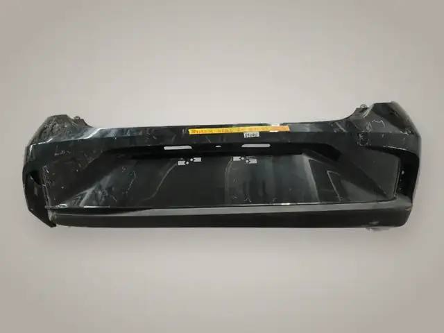
DT045Grand i102020-26 · original DT046Grand i102020-26 · original
DT046Grand i102020-26 · original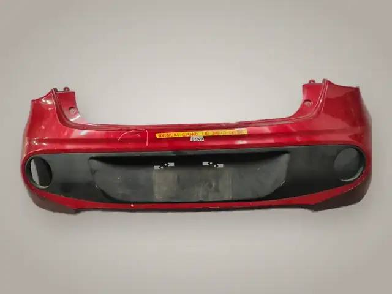
DT047Grand i102018-21 · original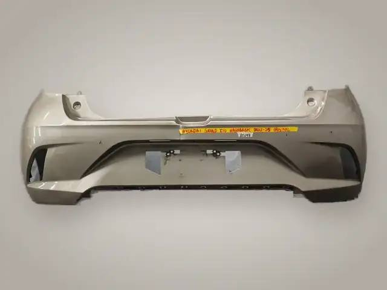
DT048Grand i10 Hatchback2020-26 · original DT049Grand i10 Hatchback2020-26 · original
DT049Grand i10 Hatchback2020-26 · original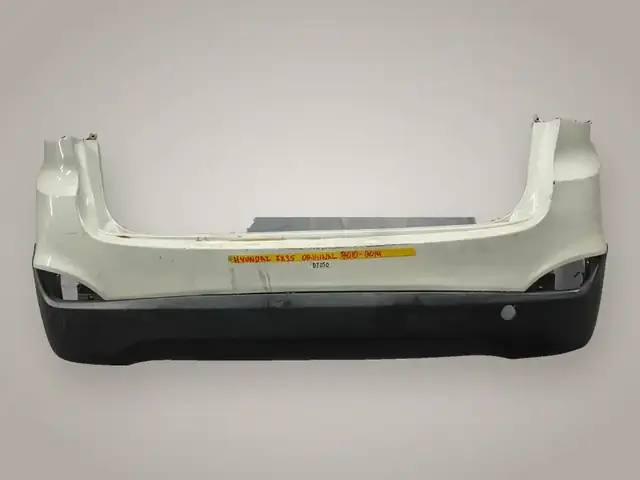
DT050ix352010-14 · original DT051Grand i102015-17 · original
DT051Grand i102015-17 · original DT052Creta2016-20 · original
DT052Creta2016-20 · original DT054Creta2014-18 · original
DT054Creta2014-18 · original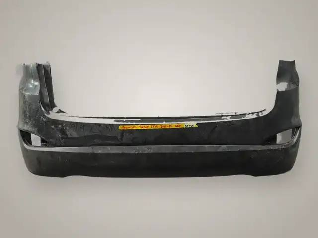
DT055Tucson ix352010-15 · genérico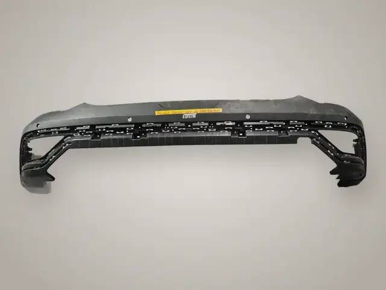
DT056Tucson2025-26 · original DT203i102023-25 · original
DT203i102023-25 · original DT207Elantra2016-18 · original
DT207Elantra2016-18 · original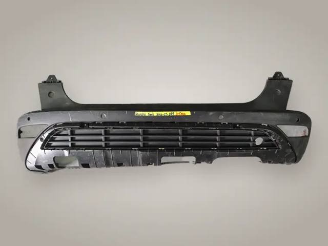
DT242Creta2021-23 · original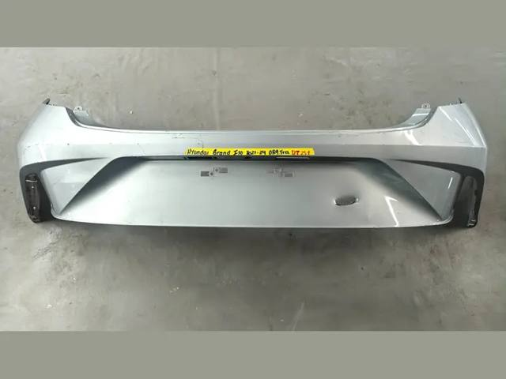
DT251Grand i102021-24 · originalGuardafangos para Hyundai 25
 GF001Creta2015-2018 · lado derecho · original
GF001Creta2015-2018 · lado derecho · original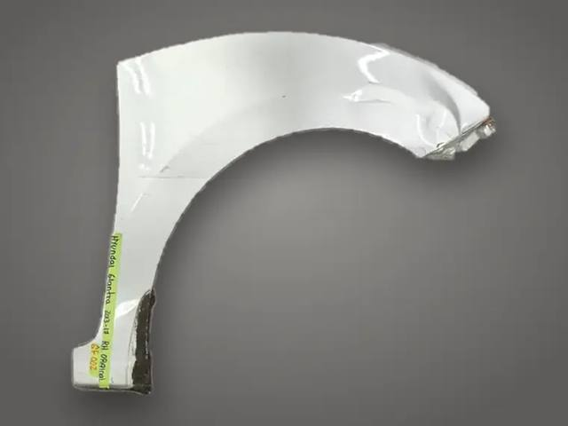
GF002Elantra2013-2017 · lado derecho · original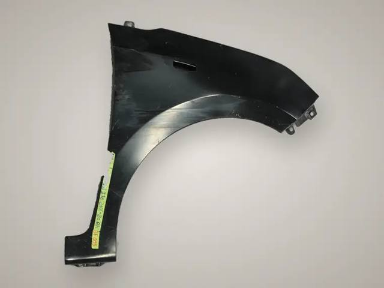
GF003Grand i102016-2020 · lado derecho · nuevo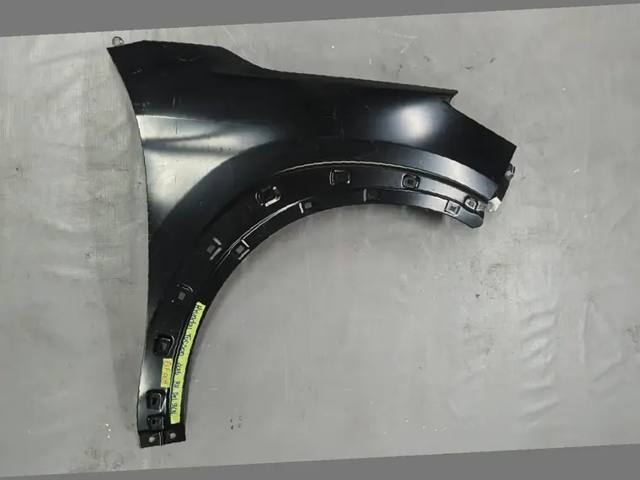
GF004Tucson2016-18 · lado derecho · genérico GF005Accent2018-20 · lado izquierdo
GF005Accent2018-20 · lado izquierdo GF006Santa Fe2016-18 · lado izquierdo · original
GF006Santa Fe2016-18 · lado izquierdo · original GF007Creta2021-2024 · lado izquierdo · original
GF007Creta2021-2024 · lado izquierdo · original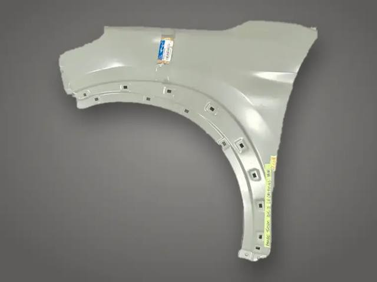
GF008Tucson2015-2021 · lado izquierdo · original nuevo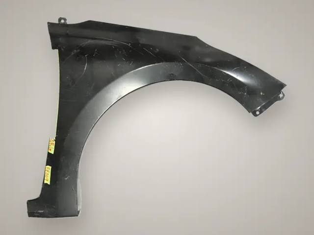
GF009Accent2012-2017 · original GF010Venue2020-2025 · lado derecho · original
GF010Venue2020-2025 · lado derecho · original GF011Tucson2016-2020 · lado derecho · original
GF011Tucson2016-2020 · lado derecho · original GF012Grand i102020-26
GF012Grand i102020-26 GF013Accent2015-17 · lado derecho
GF013Accent2015-17 · lado derecho GF014Tucson2020-2023 · lado derecho · original
GF014Tucson2020-2023 · lado derecho · original GF015Accent2013-2017 · lado izquierdo · genérico nuevo
GF015Accent2013-2017 · lado izquierdo · genérico nuevo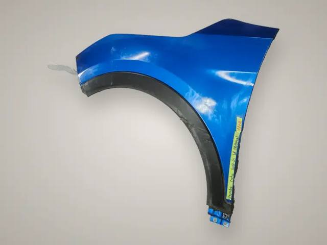
GF016Creta2018-2020 · lado izquierdo · original GF017Tucson2010-15 · lado izquierdo · genérico
GF017Tucson2010-15 · lado izquierdo · genérico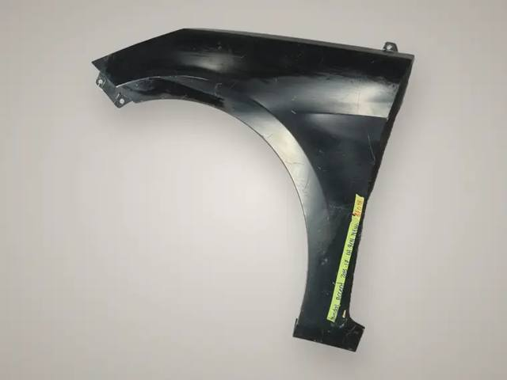
GF018Accent2013-2017 · lado izquierdo · genérico nuevo GF019Accent2013-2017 · lado izquierdo · genérico nuevo
GF019Accent2013-2017 · lado izquierdo · genérico nuevo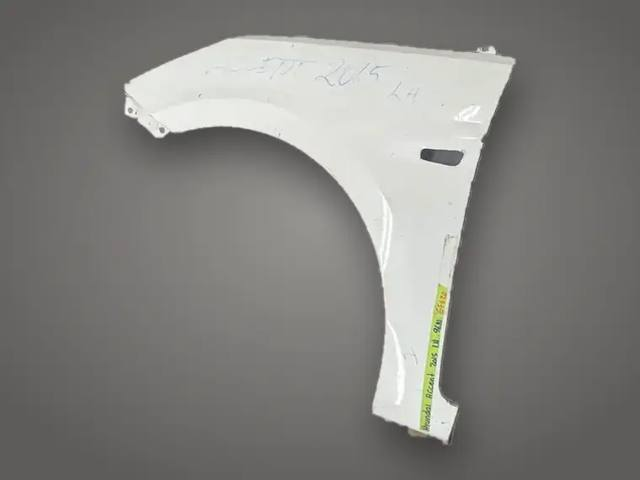
GF020Accent2015-17 · lado izquierdo · genérico GF021H12020 · lado izquierdo · original
GF021H12020 · lado izquierdo · original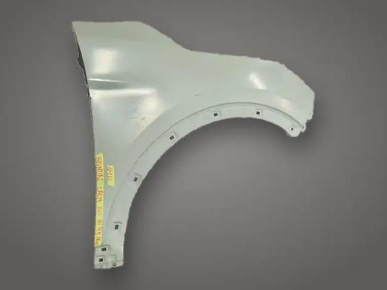
GF022Creta2015-17 · lado derecho · genérico nuevo GF116Tucson2020-2025 · lado izquierdo · original
GF116Tucson2020-2025 · lado izquierdo · original GF144Accent2011-17 · lado izquierdo · genérico nuevo
GF144Accent2011-17 · lado izquierdo · genérico nuevo GF145Accent2011-17 · lado derecho · genérico nuevo
GF145Accent2011-17 · lado derecho · genérico nuevoCovers de halógena para Hyundai 21
 CH003Santa Fe2012 · lado derecho · original
CH003Santa Fe2012 · lado derecho · original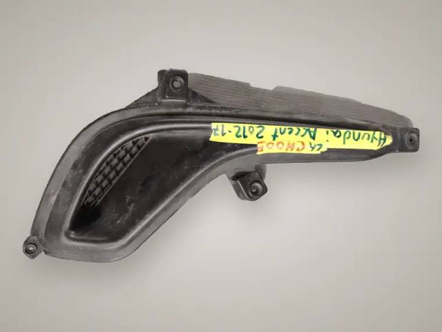
CH005Accent2012-17 · lado izquierdo · genérico CH019Santa Fe2012 · lado izquierdo · original
CH019Santa Fe2012 · lado izquierdo · original CH036Accent2012-17 · lado derecho · original nuevo
CH036Accent2012-17 · lado derecho · original nuevo CH037Accent2012-17 · lado izquierdo · original
CH037Accent2012-17 · lado izquierdo · original CH071Elantra2013-16 · lado derecho · original
CH071Elantra2013-16 · lado derecho · original CH085Santa Fe2013-15 · lado derecho · original
CH085Santa Fe2013-15 · lado derecho · original CH086Santa Fe2013-15 · lado izquierdo · original
CH086Santa Fe2013-15 · lado izquierdo · original CH097Tucson2015-17 · lado derecho · original
CH097Tucson2015-17 · lado derecho · original CH117Tucson2016-20 · lado derecho · original
CH117Tucson2016-20 · lado derecho · original CH118Tucson2015-17 · lado izquierdo · originalCH131Grand i102014-19 · lado derecho · original
CH118Tucson2015-17 · lado izquierdo · originalCH131Grand i102014-19 · lado derecho · original CH135Verna2021-23 · lado derecho · original
CH135Verna2021-23 · lado derecho · original CH149Tucson2016-21 · lado derecho · original nuevo
CH149Tucson2016-21 · lado derecho · original nuevo CH153Accent2018-22 · lado izquierdo · original nuevo
CH153Accent2018-22 · lado izquierdo · original nuevo CH154Accent2018-22 · lado derecho · original
CH154Accent2018-22 · lado derecho · original CH161Accent2012-15 · lado derecho · original
CH161Accent2012-15 · lado derecho · original CH160Accent2012-15 · lado izquierdo · original
CH160Accent2012-15 · lado izquierdo · original CH167Accent2012-15 · lado izquierdo · original nuevoCH162Verna2019-21 · lado izquierdo · originalCH170Grand i102017-20 · lado derecho · original nuevo
CH167Accent2012-15 · lado izquierdo · original nuevoCH162Verna2019-21 · lado izquierdo · originalCH170Grand i102017-20 · lado derecho · original nuevoHalógenas y faros antiniebla para Hyundai 20
 HA013Accent2012-17 · lado derecho
HA013Accent2012-17 · lado derecho HA014Accent2012-17 · lado izquierdoHA005Creta2016-18 · lado izquierdo · original nuevo
HA014Accent2012-17 · lado izquierdoHA005Creta2016-18 · lado izquierdo · original nuevo HA042Tucson2015-17 · lado izquierdo · originalHA006Creta2016-19 · lado derechoHA004Tucson2015-17 · lado derecho · originalHA054Creta2014-18 · lado izquierdoHA057Accent2012-15 · lado derecho
HA042Tucson2015-17 · lado izquierdo · originalHA006Creta2016-19 · lado derechoHA004Tucson2015-17 · lado derecho · originalHA054Creta2014-18 · lado izquierdoHA057Accent2012-15 · lado derecho HA058Accent2012-15 · lado izquierdo
HA058Accent2012-15 · lado izquierdo HA061Tucson2016-18 · lado izquierdo · original
HA061Tucson2016-18 · lado izquierdo · original HA062Grand i10 Sedán2017-20 · lado derecho · originalHA063Grand i10 Sedán2017-20 · lado derecho · originalHA065Elantra2016-18 · lado derecho · originalHA067Elantra Coupé2013-14 · lado derecho · original
HA062Grand i10 Sedán2017-20 · lado derecho · originalHA063Grand i10 Sedán2017-20 · lado derecho · originalHA065Elantra2016-18 · lado derecho · originalHA067Elantra Coupé2013-14 · lado derecho · original HA068Creta2021-23 · lado derecho · original
HA068Creta2021-23 · lado derecho · original HA072Grand i102013-17 · lado derecho · originalHA100Accent / HB202021-26 · lado derecho · original
HA072Grand i102013-17 · lado derecho · originalHA100Accent / HB202021-26 · lado derecho · original HA101Accent / HB202021-26 · lado derecho · original
HA101Accent / HB202021-26 · lado derecho · original HA102Accent / HB202021-26 · lado izquierdo · originalHA115Verna2017-22 · lado izquierdo · original
HA102Accent / HB202021-26 · lado izquierdo · originalHA115Verna2017-22 · lado izquierdo · originalCubrepolvos para Hyundai 18
 CP008Grand i102019-21 · lado derecho · genérico
CP008Grand i102019-21 · lado derecho · genérico CP017Tucson2015-20 · lado izquierdo · original
CP017Tucson2015-20 · lado izquierdo · original CP021Grand i102020-26 · lado derecho · genérico
CP021Grand i102020-26 · lado derecho · genérico CP022Accent2023-26 · lado izquierdo · original
CP022Accent2023-26 · lado izquierdo · original CP023Accent2011-17 · lado derecho · original
CP023Accent2011-17 · lado derecho · original CP032Accent2011-17 · lado izquierdo · original
CP032Accent2011-17 · lado izquierdo · original CP033Tucson2016-21 · lado derecho · genérico
CP033Tucson2016-21 · lado derecho · genérico CP039Tucson2016-21 · lado izquierdo · genérico
CP039Tucson2016-21 · lado izquierdo · genérico CP046Tucson2016-21 · lado derecho · genérico
CP046Tucson2016-21 · lado derecho · genérico CP047ix252015 · lado izquierdo · genérico
CP047ix252015 · lado izquierdo · genérico CP056Creta2021-26 · lado derecho · original
CP056Creta2021-26 · lado derecho · original CP060Accent2011-17 · lado izquierdo · genérico
CP060Accent2011-17 · lado izquierdo · genérico CP061Accent2011-17 · lado derecho · genéricoCP062Accent2011-17 · lado derecho · original
CP061Accent2011-17 · lado derecho · genéricoCP062Accent2011-17 · lado derecho · original CP066Grand i102014-19 · lado derecho · genérico
CP066Grand i102014-19 · lado derecho · genérico CP069Tucson2015-18 · lado izquierdo · original
CP069Tucson2015-18 · lado izquierdo · original CP081Tucson2013-2016 · lado izquierdo · original
CP081Tucson2013-2016 · lado izquierdo · originalDefensas delanteras para Hyundai 14
 807Accent2023-26 · original808Accent2023-26 · original809Tucson2016-19 · original
807Accent2023-26 · original808Accent2023-26 · original809Tucson2016-19 · original 810Verna2022-23 · original
810Verna2022-23 · original 811Verna2022-23 · original
811Verna2022-23 · original 812Creta2021-23 · original
812Creta2021-23 · original 813Creta2021-23 · original814Grand i102013-17 · original nuevo
813Creta2021-23 · original814Grand i102013-17 · original nuevo 816Grand i102020-26 · original
816Grand i102020-26 · original 817Grand i102020-26 · original940H12018-20 · original951Kona2020-26 · original
817Grand i102020-26 · original940H12018-20 · original951Kona2020-26 · original DD010Verna2020-22 · original
DD010Verna2020-22 · originalCopas para Hyundai 13
 732Creta2021-23733Creta2021-23
732Creta2021-23733Creta2021-23 734Tucson2016-18
734Tucson2016-18 735Elantra2016-20
735Elantra2016-20 736Grand i102020-26
736Grand i102020-26 737Eon2012-19
737Eon2012-19 738Matrix2001
738Matrix2001 739Eon2012-19
739Eon2012-19 740Accent2011-19
740Accent2011-19 741Accent2008-11
741Accent2008-11 742Grand i102014-16
742Grand i102014-16 743Accent2015-17
743Accent2015-17 744Accent2015-17
744Accent2015-17Puertas para Hyundai 13
 PT024Creta2021-26 · lado derecho · original
PT024Creta2021-26 · lado derecho · original PD012Accent2011-17 · lado izquierdo · original
PD012Accent2011-17 · lado izquierdo · original PT023Tucson2010-2015 · lado derecho · original nuevoPT021Accent2018-22 · lado derecho · original
PT023Tucson2010-2015 · lado derecho · original nuevoPT021Accent2018-22 · lado derecho · original PT020Creta2015-20 · lado derecho · original
PT020Creta2015-20 · lado derecho · original PT019Creta2015-20 · lado izquierdo · original
PT019Creta2015-20 · lado izquierdo · original PD011Accent2011-17 · lado derecho · genérico nuevoPT022Palisade2024 · lado izquierdo · original
PD011Accent2011-17 · lado derecho · genérico nuevoPT022Palisade2024 · lado izquierdo · original PD010Accent2011-17 · lado derecho · original
PD010Accent2011-17 · lado derecho · original PT064Accent2018-22 · lado derecho · original nuevo
PT064Accent2018-22 · lado derecho · original nuevoCapós para Hyundai 12
 TM003Grand i102015-20 · original
TM003Grand i102015-20 · original TM010Creta2016-20 · original
TM010Creta2016-20 · original TM016Accent2011-19 · original nuevo
TM016Accent2011-19 · original nuevo TM021Grand i102020-26 · original
TM021Grand i102020-26 · original TM025Grand i102017-19 · originalTM026Accent2006-10 · genérico
TM025Grand i102017-19 · originalTM026Accent2006-10 · genérico TM027Accent2018-21 · original
TM027Accent2018-21 · original TM029H-12010-19 · original
TM029H-12010-19 · original TM043Creta2016-20 · originalTM030H-12010-19 · original
TM043Creta2016-20 · originalTM030H-12010-19 · original TM064Accent2012-17 · original
TM064Accent2012-17 · original TM068Accent2015-17
TM068Accent2015-17Flares para Hyundai 10
 FL028Creta2017-20 · lado izquierdo · original
FL028Creta2017-20 · lado izquierdo · original FL040Tucson2016-20 · lado derecho · originalFL053Tucson2021-25 · lado izquierdo · original
FL040Tucson2016-20 · lado derecho · originalFL053Tucson2021-25 · lado izquierdo · original FL054Tucson2016-21 · lado derecho · original
FL054Tucson2016-21 · lado derecho · original FL062Grand i102017-19 · lado derecho · original
FL062Grand i102017-19 · lado derecho · original FL175Creta2016-20 · lado derecho · original
FL175Creta2016-20 · lado derecho · original FL176i202021-26 · lado izquierdo · originalFL178Creta2016-20 · lado derecho · original
FL176i202021-26 · lado izquierdo · originalFL178Creta2016-20 · lado derecho · original FL183Creta2014-19 · lado izquierdo · original
FL183Creta2014-19 · lado izquierdo · original FL186Creta2015-20 · lado izquierdo · original
FL186Creta2015-20 · lado izquierdo · originalTapas superiores de radiador para Hyundai 9
 TA001Tucson2016 · original
TA001Tucson2016 · original TA003Grand i10 Active2017-20 · original nuevo
TA003Grand i10 Active2017-20 · original nuevo TA004Verna2020-22 · original nuevo
TA004Verna2020-22 · original nuevo TA033Accent2020-22 · original
TA033Accent2020-22 · original TA037Verna2020-22 · original
TA037Verna2020-22 · original TA039Santa Fe2013-17 · originalTA045Tucson2016-21 · original
TA039Santa Fe2013-17 · originalTA045Tucson2016-21 · original TA006Santa Fe Sport2012-16 · original
TA006Santa Fe Sport2012-16 · original TA049Accent2011 · genérico
TA049Accent2011 · genéricoTapas de baúl para Hyundai 8
 TB002Verna2019-22 · original
TB002Verna2019-22 · original TB001Grand i10 Sedan2014-18 · original
TB001Grand i10 Sedan2014-18 · original TB007Accent / Solaris2018-22 · original
TB007Accent / Solaris2018-22 · original TB008Accent2023-26 · original
TB008Accent2023-26 · original TB014Venue2020-26 · original
TB014Venue2020-26 · original TB022Grand i10 Hatchback2014-19 · originalTB049Tucson2022-25 · original
TB022Grand i10 Hatchback2014-19 · originalTB049Tucson2022-25 · original TB056Santa Fe2016-19 · original
TB056Santa Fe2016-19 · originalRefuerzos traseros para Hyundai 8
 R073Accent2018-20 · original
R073Accent2018-20 · original R074Grand i10 HB2021-25 · original
R074Grand i10 HB2021-25 · original R075Grand i102021-24 · original
R075Grand i102021-24 · original R082Accent2021-23 · original
R082Accent2021-23 · original R089Accent / Solaris2016-19 · originalR091Accent2011-17 · originalR093Accent2018-22 · originalR097Venue2020-26 · original
R089Accent / Solaris2016-19 · originalR091Accent2011-17 · originalR093Accent2018-22 · originalR097Venue2020-26 · originalVidrios para Hyundai 8
 VA013Accent2011-17 · lado izquierdo · original
VA013Accent2011-17 · lado izquierdo · original VA020Grand i102021-25 · original
VA020Grand i102021-25 · original VA027Accent2018-22 · lado derecho · original
VA027Accent2018-22 · lado derecho · original VA029Accent2011-17 · original
VA029Accent2011-17 · original VA030Verna2018-22 · originalVA036Accent2018-22 · original nuevoVA037Grand i102013-17 · originalVA045Tucson2010-15 · lado derecho · original
VA030Verna2018-22 · originalVA036Accent2018-22 · original nuevoVA037Grand i102013-17 · originalVA045Tucson2010-15 · lado derecho · originalMarcos de radiador para Hyundai 7
 MR013Tucson2022-26 · original nuevo
MR013Tucson2022-26 · original nuevo MR014Tucson2015-19 · genéricoMR015Santa Fe2019-23 · original
MR014Tucson2015-19 · genéricoMR015Santa Fe2019-23 · original MR016Elantra2011-15 · originalMR017Elantra2011-15 · genérico
MR016Elantra2011-15 · originalMR017Elantra2011-15 · genérico MR019Grand i102020-26 · genérico
MR019Grand i102020-26 · genérico MR020Grand i102020-26 · genérico
MR020Grand i102020-26 · genéricoEstribos y rolling boards para Hyundai 6
 RB013Tucson2010-2017 · lado izquierdo · original nuevo
RB013Tucson2010-2017 · lado izquierdo · original nuevo RB016Santa Fe2006-2013 · lado izquierdo · original
RB016Santa Fe2006-2013 · lado izquierdo · original RB037Tucson2015-2021 · lado derecho · original
RB037Tucson2015-2021 · lado derecho · original RB038Tucson2015-2021 · lado derecho · original
RB038Tucson2015-2021 · lado derecho · original RB039Tucson2015-2021 · lado derecho · original
RB039Tucson2015-2021 · lado derecho · originalRefuerzos delanteros para Hyundai 6
 R045Creta2016-18 · original
R045Creta2016-18 · original R046Grand i102016-19 · original nuevo
R046Grand i102016-19 · original nuevo R047Grand i102021-24 · original
R047Grand i102021-24 · original R061Santa Fe2012-18 · original
R061Santa Fe2012-18 · original R065Tucson2015-26 · originalR107Tucson ix352016-21 · genérico
R065Tucson2015-26 · originalR107Tucson ix352016-21 · genéricoDefensas delanteras inferiores para Hyundai 5
 DDI019Starex H12018-21DDI028Tucson2018-22
DDI019Starex H12018-21DDI028Tucson2018-22 DDI033Tucson ix352010-15
DDI033Tucson ix352010-15 DDI002Tucson2010-15 · original
DDI002Tucson2010-15 · original DDI049Tucson2022-24 · original
DDI049Tucson2022-24 · originalDefensas traseras inferiores para Hyundai 5
 DTI002Tucson2015-18 · nuevoDTI010Creta2017-20DTI017i202018-20 · original nuevo
DTI002Tucson2015-18 · nuevoDTI010Creta2017-20DTI017i202018-20 · original nuevo DTI023Tucson2016-18 · original nuevo
DTI023Tucson2016-18 · original nuevo DTI041Grand i102024 · original
DTI041Grand i102024 · originalRetrovisores para Hyundai 4
 RV007Creta2017-20 · lado izquierdo · genérico
RV007Creta2017-20 · lado izquierdo · genérico RV017Tucson2006-10 · lado izquierdo · original
RV017Tucson2006-10 · lado izquierdo · original RV028Creta2015-19 · lado derecho · original
RV028Creta2015-19 · lado derecho · original RV043Tucson2009-16 · lado izquierdo
RV043Tucson2009-16 · lado izquierdoGuardafangos traseros para Hyundai 4
 GFT001Tucson2016-21 · lado derecho · genérico
GFT001Tucson2016-21 · lado derecho · genérico GFT003Verna2018-22 · lado derecho · originalGFT006i302009-15 · lado izquierdo · original
GFT003Verna2018-22 · lado derecho · originalGFT006i302009-15 · lado izquierdo · original GFT009Accent2018-22 · lado izquierdo · original nuevo
GFT009Accent2018-22 · lado izquierdo · original nuevo PCh011Accent
PCh011Accent PCh001Creta
PCh001Creta PCh004Grand i10
PCh004Grand i10 DA003Accent
DA003Accent DA005Grand i20
DA005Grand i20 MLP001i20
MLP001i20 MLD001Creta
MLD001Creta